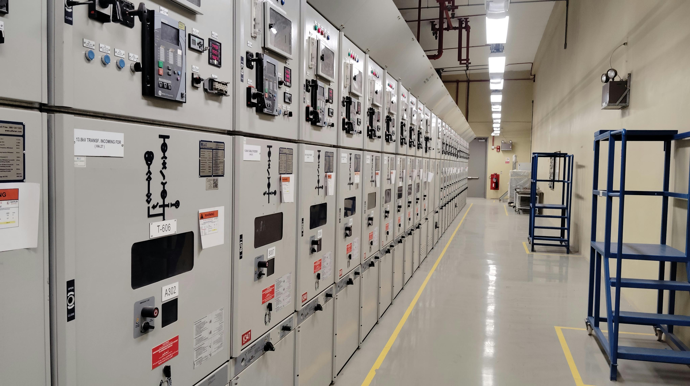
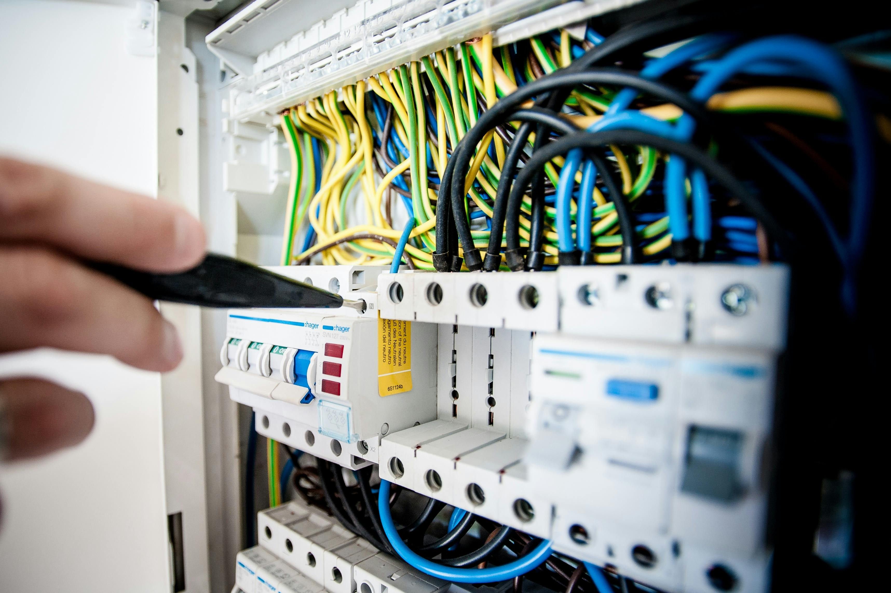

Nuestra empresa cuenta con electricista matriculado especializado en la ejecución de instalaciones eléctricas en obras nuevas, cumpliendo con todas las normativas vigentes de seguridad eléctrica (A.E.A. y reglamentaciones locales). Entre las principales tareas se incluyen:
Interpretación y ejecución de planos eléctricos aprobados por profesionales responsables.
Diseño y tendido de cañerías, bandejas y canalizaciones para el paso de conductores.
Cableado y conexionado de circuitos de fuerza, iluminación y servicios auxiliares.
Instalación de tableros generales y seccionales con sus correspondientes protecciones (disyuntores, interruptores termomagnéticos, diferenciales, etc.).
Colocación de tomacorrientes, interruptores, puntos de iluminación y artefactos eléctricos.
Implementación de sistemas de puesta a tierra y protección contra contactos indirectos.
Verificación de continuidad, aislamiento y cumplimiento de la selectividad de protecciones.
Pruebas funcionales y mediciones con instrumental homologado.
Entrega de la instalación en condiciones de operación segura y certificación final.
De esta manera, aseguramos que cada instalación eléctrica nueva sea segura, eficiente y confiable, garantizando la calidad del servicio y la satisfacción del cliente.
Garantizar la seguridad y calidad de las instalaciones y productos eléctricos a través de una serie de tareas fundamentales. Su principal labor es la inspección, evaluación y validación de que los sistemas, equipos y componentes cumplan con las normas técnicas y regulaciones nacionales e internacionales, como las de la Asociación Electrotécnica Argentina (AEA) y las resoluciones de la Secretaría de Energía. Esto incluye la revisión de planos, cálculos, materiales y la ejecución de pruebas en campo para verificar el correcto funcionamiento, la protección contra riesgos como cortocircuitos e incendios, y la eficiencia energética. Además, emiten los certificados de conformidad necesarios para la habilitación de nuevas instalaciones o la comercialización de productos eléctricos, brindando confianza y respaldo a usuarios, empresas y organismos de control.

Diseño, montaje y puesta en marcha de sistemas de control y distribución de energía. Sus tareas principales abarcan desde el análisis de las necesidades del cliente y la elaboración de ingeniería de detalle para dimensionar correctamente los componentes, hasta la construcción física de los tableros en su taller, lo que incluye el cableado, la rotulación y el testeo de cada unidad. Luego, se encargan de la instalación en sitio, conectando los tableros a la red eléctrica y a la maquinaria que se va a automatizar. Una parte crucial del trabajo es la programación de los Controladores Lógicos Programables (PLC) y la configuración de sistemas de supervisión y adquisición de datos (SCADA), lo que permite que los procesos industriales operen de forma automática, eficiente y segura. Finalmente, realizan pruebas de funcionamiento integrales y capacitan al personal del cliente para garantizar que el sistema opere sin inconvenientes, ofreciendo a menudo servicios de mantenimiento preventivo y correctivo. Su labor es fundamental para modernizar la industria, optimizar la producción y reducir el consumo energético en fábricas, edificios o plantas de tratamiento.
Corrección de energía reactiva y puesta a tierra se enfoca en optimizar la calidad y seguridad de las instalaciones eléctricas, cumpliendo con las normativas locales como las de la AEA y resoluciones de la Secretaría de Energía y el ENRE. En lo que respecta a la corrección del factor de potencia, su tarea principal es medir el consumo de energía reactiva de una instalación, que no produce trabajo útil y genera penalizaciones en la factura eléctrica. Para ello, instalan bancos de capacitores que compensan esa energía, reduciendo los costos y mejorando la capacidad del sistema. En cuanto a la puesta a tierra, su función es crucial para la seguridad de las personas y equipos. Realizan un estudio de la resistividad del suelo, diseñan e instalan sistemas de puestas a tierra y miden su resistencia con instrumental especializado (telurímetros). Esta medición y su certificación son obligatorias en el ámbito laboral según la Resolución SRT 900/15 y aseguran la derivación segura de fugas de corriente o descargas atmosféricas. En conjunto, ambas tareas buscan garantizar la eficiencia energética y la protección de cualquier instalación eléctrica.